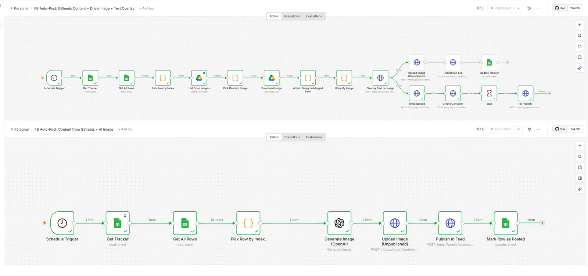

CRM delivery
GHL Systems Specialist
Pipelines, lifecycle stages, custom fields, calendars, forms, routing, follow-up and booking logic, with attention to opt-outs and conflicting automations.
I build, troubleshoot and document CRM workflows, AI-assisted processes and cross-platform integrations for service businesses and agencies. I work with GoHighLevel, Zapier, Pabbly, n8n, APIs and Voice AI, choosing the tools that best fit the process and testing the results from a user's perspective.
I am particularly suited to roles that combine hands-on implementation with careful inspection, testing and operational documentation.
Pipelines, lifecycle stages, custom fields, calendars, forms, routing, follow-up and booking logic, with attention to opt-outs and conflicting automations.
Design and troubleshoot workflows across n8n, Zapier, Pabbly, webhooks and REST APIs, with validation, error handling and safeguards against duplicate actions.
Voice AI qualification and escalation, deterministic checks around AI output, end-to-end user testing, defect reporting and SOP-driven handover.
These cases distinguish completed work, diagnosed issues and unapproved proposals. Figures describe project scope or findings, not invented revenue or conversion gains.
Reviewed a credit-repair consultancy's account and booking experience. Flagged access concerns, a booking error, messaging registration and attribution issues.
46% missed calls found · 5 issues prioritized Read audit case study →Mapped donor-lifecycle data into GHL and built an n8n content workflow with image generation, branded processing and Facebook publishing.
23 custom fields · 11 workflows · 6 email templates See architecture and screenshots →Compared search demand, campaign quality and landing-page performance while identifying unresolved booking-event and reporting discrepancies.
Research completed · Pilot and tracking fixes pending Review conversion QA findings →
Review the current configuration and business process before proposing changes.
Trace triggers, data, decisions, side effects, owners and dependencies.
Test success and failure paths, duplicates, opt-outs and user experience.
Document configuration, known limitations, results and next actions.
My previous engineering and operations responsibilities taught me to manage dependencies, scope, QA, timelines and client handoffs. I apply the same discipline to CRM automation.
GoHighLevel implementation, n8n, Zapier and Pabbly automations, API integrations, Voice AI, website conversion journeys, SEO/AEO, analytics and QA for service businesses and agencies.
HVAC design, BIM coordination, estimation, scheduling, supplier and subcontractor management, and client delivery.
Technical operations, troubleshooting, preventive maintenance, training, proposals and project execution.
For interviews and specialist opportunities, send a role description and the systems your team uses. For client projects, use the main portfolio to book a systems call.